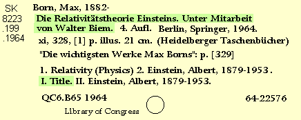

Copy: Titles (130, 2xx, 630, 730, 740)

245 14 Die Relativitätstheorie Einsteins.‡cUnter Mitarbeit von Walter Biem.
Generally accept all titles as they appear on the copy.
For Uniform Titles, eliminate initial articles and adjust filing indicators if necessary.
The information I. Title means putting a 1 in the first indicator of the 245 Field.
245 14 Die Relativitätstheorie Einsteins.‡cUnter Mitarbeit von Walter Biem.
Go back to: Names
Continue with: Editions